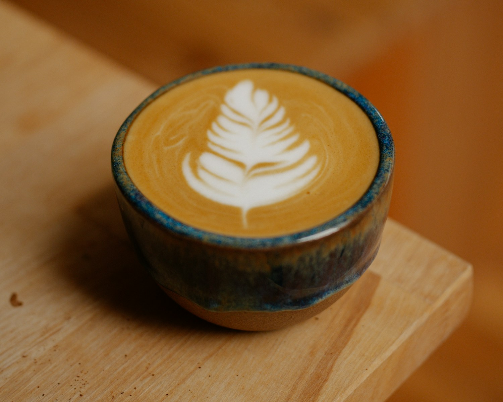
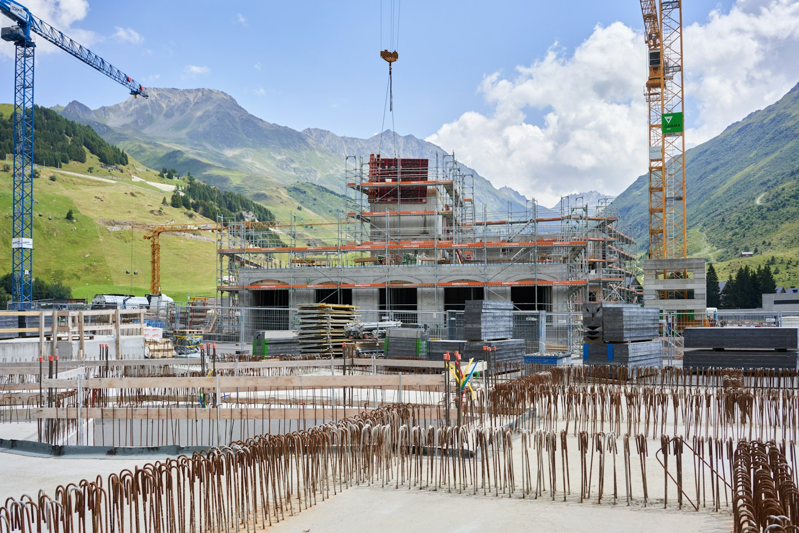

Дизайн + разработка
Идеи, ставшие сайтами.
Два учебных концепта — два разных подхода к дизайну.

a little pause in your dayTERRACOFFEE. PEOPLE. LITTLE RITUALS.
Кофейня
01TERRA / Coffee & Bakery
Атмосфера кофейни, меню и детали визита.

built around youFORMASPACES WITH A FUTURE.
Строительная компания
02FORMA / Construction
Сайт строительной компании. Архитектура, проекты и детали.
А каким будет ваш сайт?
Найдём визуальный характер для вашего проекта.